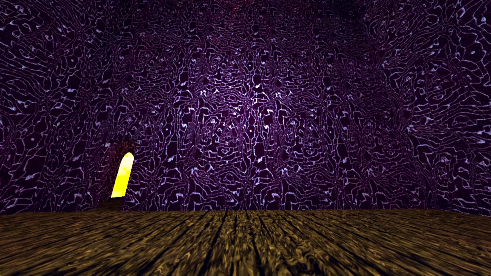
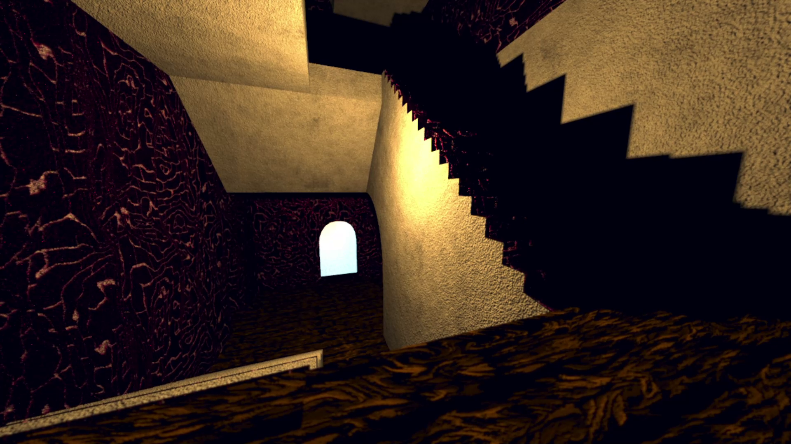
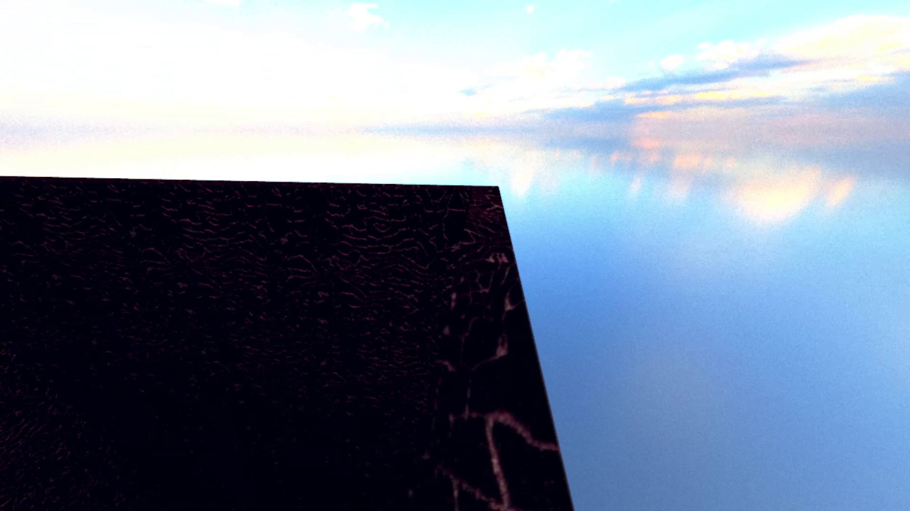

Path Traced Audio Probes
I have recently implemented path traced audio probes in my game engine. I will continue iterating on them (they still have some tweaking needed) but I wanted to share what I have learned so far since there doesn't seem to be that many resources on this and all of the work that goes into it. It might surprise you how much there is to cover and the fact that the tracing is really the most straightforward part. We need to parse a sofa to set up a static HRTF (of a real human head!) that we will use in convolution with our probe samples to compose an IR. Then, we'll need to convolve that with our audio stream. Sounds simple. The issue is how to get there, and how to get there fast.
The first order of business is to discuss the scope and what we're working with. My implementation has path traced early reflections and I use that ray data to generate a synthetic IR. This approach is different than the more common one, FDN. The benefits of having a synthetic IR with schroeder integration is that we don't compromise on accuracy in the slightest. The downside is that it's slower (because we actually convolve the full IR worth of samples) than using an FDN, which is an algorithmic approximation that works in real time simulating delays. What we're doing is an approximation as well, but we actually write samples straight to the IR using our environment data. However, they both work off of the same value, an RT60, which we'll get to later. Since we're working with audio we'll need to handle some FFTs. My FFTs are actually done on the cpu and are fairly fast due to a partitioned fft setup using overlap-add. Also important to mention is that we are using second order spherical harmonics for spatialization, which is the same that most use for lighting probes. So if this is familiar, yes we will be using the same exact function to process our audio. Also, even though this article will cover the probes, it will largely be focused on convolution and constructing and using an IR. Therefore, it should also have significant relevance even if you are doing real time audio raytracing.
If you're following along you'll need a few things. One, you'll need an FFT library. I recommend using a library for this instead of writing your own since you will need every microsecond. For these examples I will be using FFTW. It's familiar to me so it was a safe choice. Secondly, you will need a way to parse a SOFA. A SOFA file is a 3D file format storing acoustic data. It uses positions to query measurements. I used libmysofa for this. Depending on your language you'll need to figure it out. You'll also need an HRTF of your choice. I went with SADIE II for this, which has the added bonus of coming with its own decoder which you might find useful. You'll also need a way to trace. I'm not sure what that's like in APIs that expose hardware tracing, I use OpenGL. In my case that means having acceleration structures and SSBOs to store ray data into. You will also need some way to handle audio itself in your engine. In my case, I use SDL2 for processing and miniaudio for basic spatialization. These are super useful but sometimes they are quite annoying to handle when you need them to do specific stuff. If you're up to the challenge, building your own spatializer and basic audio engine could actually be worth it. I also recommend you pick out some sounds to test with. Try a sound with a quick transient and one without one. Make sure they have no background noise or compression artifacts (you do NOT want to spend time tracking down invisible crackling that is in the original sound but just amplified by the IR).
Initialization
Alright, with all of that out of the way, where do we begin? Firstly, we need to initialize our audio engine with a block size. Basically, this block size determines how many samples (in time) we will process at once. In my engine, I use a block size of 512 because I felt like it was a reasonable compromize when it comes to the amount of partitions needed (95). Smaller block sizes will need more partitions, so keep that in mind. I use a sample rate of 48000, that's pretty standard. Just keep in mind that if you change any of the numbers here than other numbers later down the line will also have to change. Once you have a sound playing in the game world, we can begin.
We need a way to process our block size before it hits the master bus. This means hooking up our sound sources to a postprocessing chain. In miniaudio this is fairly simple. I create a node, and hook my audio to the node input, and hook the node output up to the engine, which is the master endpoint.
In miniaudio, to create a custom node we pass a vtable.
static ma_node_vtable my_custom_node_vtable =
{
convolver_node_process_pcm_frames,
NULL,
2,
1,
0
};That vtable has the convolver node block processing callback as the first argument. This node that sits between our sound and the master will allow us to process the incoming audio. Once you have sound flowing through this, you can move forward.
HRTF
Before we get to the tracing let's set up the HRTF. The HRTF is a Head-Related Transfer Function. It's basically a measurement of how a real human head processes sound cues and spatialization. It's what's going to add realism to our IR so it doesn't sound flat. As mentioned previously, I used the SADIE II database to get a FIR HRIR HRTF. You want HRIR over BRIR, which adds the room's reverb and quality. To open it and parse it, I use the SADIE II speaker positions for a icosahedron, since I'm using their decoder. You can implement your own speaker positions here and implement your own decoder. I just found that their decoder spatialized better than my own, probably since the information on how to generate your own decoder is pretty sparse. You can choose your amount of speakers. 12 seemed reasonable. 9 is the minimum for second order spherical harmonics.
In libmysofa, parsing this is very easy.
struct MYSOFA_EASY * sofa = mysofa_open_no_norm(filename, SAMPLE_RATE, &HRTF_LENGTH, &err);
for (int i = 0; i < 12; i++)
{
HRTF_LEFT[i] = malloc(sizeof(float) * HRTF_LENGTH);
HRTF_RIGHT[i] = malloc(sizeof(float) * HRTF_LENGTH);
mysofa_getfilter_float(sofa, spos[i].x, spos[i].y, spos[i].z, HRTF_LEFT[i], HRTF_RIGHT[i], &DELAY_L[i], &DELAY_R[i]);
}This gives us our HRTF data. The delays in my sofa are empty. If they aren't in yours, you may need to shift the samples over so the transients start at zero. Since I no longer create my own decoder, all there is to do is use the SADIE decoder and multiply it by the HRTF. You can apply max re weights here, which changes the weights of the spherical harmonics if you choose to do so. Those weights are 1.0, 8.66, and 0.5 for each order of SH respectively (from now on I will refer to spherical harmonics as SH). So loop over each SH and the HRTF length, multiply them per speaker position, sum them up over the speaker positions. Then, take a forward FFT of that per SH.
for (int i = 0; i < SH_MAX; i++)
{
for (int j = 0; j < HRTF_LENGTH; j++)
{
float sum_L = 0.0f;
float sum_R = 0.0f;
for (int k = 0; k < 12; k++)
{
float weight = SADIE_DECODER[k][i] * MAX_RE_WEIGHTS[i];
sum_L += weight * HRTF_LEFT[k][j];
sum_R += weight * HRTF_RIGHT[k][j];
}
STATIC_HRTF_L[j] = sum_L;
STATIC_HRTF_R[j] = sum_R;
}
fftwf_execute_dft_r2c(static_fwd_plan, STATIC_HRTF_L, STATIC_HRTF_L_FWD[i]);
fftwf_execute_dft_r2c(static_fwd_plan, STATIC_HRTF_R, STATIC_HRTF_R_FWD[i]);
}This stores the result into a complex array per SH that we will use later to convolve with our probe samples in constructing our IR.
Also important to mention here is the size of these arrays that will be referenced throughout this article. These arrays for the real HRTF are computed by MAX_IR_SAMPLES + HRTF_LENGTH - 1. MAX_IR_SAMPLES is simply the sample rate * the amount of seconds in my case, it may be different for you if you choose to downsample your IR to save memory. The complex data is allocated to (REAL_LENGTH / 2) - 1. We pad out our real data with zeros to the next power of two. This same pattern will be used later for the buffers that we convolve with when applying the IR to our audio stream, however the amount of samples will be different. It will be BLOCK_SIZE (which for me pads out to 1024). Then the complex length is determined in the same manner. This is important to pay attention to since I will occasionally be iterating over the different lengths. Also, all of your FFT plans need to be initialized based on the real (padded) length, not the complex length.
Great! We have our static HRTF, which is named static because it will never change. This gets loaded in at init and stays that way, which is why we covered it first. The next thing that never changes is the probes, which is what we will cover next.
Tracing
My probes are in a uniform grid currently. I plan to move away from it because these probes benefit greatly from proper placement. I'll recommend you start with a uniform grid until you get things working, it will make your life much easier. So, what do probes store? Well, in my case while working per probe during the bake, they store SAMPLE RATE samples * 9 SH * 6 bands. This is a lot of memory. Thankfully the bands are collapsed after processing the probe to one and stored in final_ir per probe, which is then SAMPLE RATE samples * 9 SH. This is the value that is convolved with the HRTF when probes are sampled. For tracing you can use whatever method you like, but I use standard path tracing. This means that I shoot out rays and iterate to a maximum bounce count and continually trace the path (usually 4000+ rays and 25+ bounces). If you're doing real-time RT, this might be where we differ. Unlike standard lighting path tracing, we won't be filtering the color of our ray as we continue along. Instead, we will be decreasing our energy based on the absorption and scattering coefficients of the materials we hit!
So what's this about bands anyway? Well, you can think of these frequency bands as knobs on an EQ. I chose to go with 6 bands for higher accuracy. Many go with 4 or less, and that's completely fine. The advantage of computing all of this offline is that you can really pump the numbers on parameters like this, so I usually take advantage of it. My bands are 125, 250, 500, 1000, 2000, and 4000. You can do 6000 as well, I might switch to that at some point as well. Anyway, each of these bands will diverge in energy based on two coefficients that will be per material. How do you find these coefficients? Well, there's plenty of good resources for absorption but not that many for scattering since due to strict ISO standards the equipment for measuring it is very specific and difficult to set up I presume. As far as I can tell, very little of these are actually available to the public, and maybe available at all (especially for per band coefficients). I do have one resource to share for them (and it's got 33 bands!) but there aren't a ton of materials. If you dig up more somewhere, feel free to let me know and I can include them here as well. Also, here's a spreadsheet in german with thousands of materials for absorption coefficients. Anyway, setting these coefficients per band to your materials will allow different materials to change the timbre of your sound (kind of like how different materials change the color of lighting rays)!
The setup in my case is an SSBO of samples that stores energy per band and time of flight, as well as some additional data that's useful for debugging, like position for example. I highly recommend you also store debug information and visualize it since audio is notoriously difficult to debug since there's no feedback other than spatialization which can be tricky on its own. To demonstrate the dispatch in pseudocode
Dispatch over (x: rays, y: probes)
{
dir = generate uniform sphere dir between ray index and ray max
pos = probe position
dist = 0
energy[bands] = 1.0
for (i in 0.. max bounces)
{
sample index = probe * max samples per probe + ray * max bounces + i
hit = raycast from pos in direction dir
if (hit did not hit) break // exited into atmosphere
dist += hit distance
dist to probe = distance between hit pos and probe
shadow hit = raycast from hit pos to probe position
arrival dir = normalize(probe pos - hit pos)
sample dist = dist + dist to probe
record sample:
sample[sample index].dist = sample dist / speed of sound
sample[sample index].dir = arrival dir
mark sample as valid
if (shadow hit distance < dist to probe) sample is not valid // occluded by a wall
material = hit material
find avg scattering coefficient across all bands
if (rand < avg scattering)
dir = cosine weighted ray
else
dir = reflect(dir, hit normal)
total energy = 0.0
for (band in 0.. bands)
if (we reflected diffusely)
energy[band] *= material.scattering[band] / avg scattering
else
energy[band] *= (1.0 - material.scattering[band]) / (1.0 - avg scattering)
energy[band] *= 1.0 - material.absorption[band]
sample[sample index].energy[band] = energy[band]
total energy += energy[band] * energy[band]
if (sqrt(total energy) < threshold) break // ray dissipated
}
}A note here on scattering coefficients. You may observe that we don't actually shoot different rays based on scattering coefficient (which measures how much of a sound reflects specularly). This is true, instead we compensate the energy based on if we reflected specularly or diffusely. The reason is noise. In my previous attempt I did in fact shoot different rays per band, but there were negative phasing side effects. So this part isn't physically exact and I might not stick with it permanently but this is a good approximation for now. Anyway, that's pretty much it for the trace. Then, I read back the buffer with the samples from the gpu and process them.
Processing the Samples
To process our samples we must iterate through each one per probe. Each sample has a different time of flight, which represents how far the ray traveled before it was heard in time. To convert this to the time domain, we simply multiply it by SAMPLE RATE. I choose to maintain only one second of IR, so for me I simply cap it at SAMPLE RATE. If you want to do more, then you can do SECONDS * SAMPLE RATE, but we already have significant memory issues. This value is our sample index.
For each sample, you will need to evaluate the arrival direction for each SH. Here I also have a swizzle to match my spatialization to my rotation math that is used for rotating the SH based on camera vectors later.
float SH[SH_MAX];
vec3 tr_dir = {sample->arrival_dir.y, sample->arrival_dir.x, -sample->arrival_dir.z};
evaluate_sh(tr_dir, SH);
for (int sh = 0; sh < SH_MAX; sh++)
{
for (int band = 0; band < AUDIO_NUM_BANDS; band++)
{
aprobe->samples[sample index][sh][band] += SH[sh] * sample->energy[band] * norm;
}
}Evaluate SH is of course the standard SH coefficient boilerplate that you use for lighting as well. If you don't have it yet, it looks like this.
void evaluate_sh(vec3 dir, float SH[SH_MAX])
{
SH[0] = 0.282095;
SH[1] = 0.488603 * dir.y;
SH[2] = 0.488603 * dir.z;
SH[3] = 0.488603 * dir.x;
SH[4] = 1.092548 * dir.x * dir.y;
SH[5] = 1.092548 * dir.y * dir.z;
SH[6] = 0.315392 * (3 * dir.z * dir.z - 1);
SH[7] = 1.092548 * (dir.x * dir.z);
SH[8] = 0.546274 * (dir.x * dir.x - dir.y * dir.y);
}Schroeder Integration
Now that you have your sample data, you can send it straight forward and FFT it and use it as an IR. However, for bigger spaces that require more than 5-10 bounces, you will need a bigger boat as they say. You have what is known as early reflections, but for longer tails that aren't going to be incredibly noisy and out of phase, you'll need a method to generate them. You have two options: an FDN or a synthetic IR. I use a synthetic IR because I wanted to have absolute control, but an FDN seems much less complex and faster, which is why it's the more popular option. As usual, I can't play by the rules. The benefit of using an FDN is that you don't have to convolve many partitions with overlap-add during runtime. Anyway, whatever you choose, you need to calculate what's known as an RT60. This is a single value that measures how much time it takes for a sound to decay by 60db after the sound stops. The goal is to calculate an RT60 per band to give our late reflections color. Once again you have two main options, Eyring's formula or Schroeder integration. I chose Schroeder integration because it simply offers better accuracy and thankfully we already have all of the data we need to calculate it. If we were to use Eyring, it would be a faster process since it is one equation, but we are throwing away our time / distance values that we worked to get. Eyring's formula was created to measure rooms, which is why it requires volume values. It seemed to me that Schroeder was simply the more robust option since it doesn't require room dimensions or surface area (of course we could technically estimate that with our ray data), and it doesn't assume perfect diffusion like Eyring.
Firstly, do we square the samples on the way in? No, because we already have raw energy values. That part of the equation assumes that we have raw amplitude, but we already have energy.
The first part is constructing an EDC (Energy Decay Curve). We must iterate backwards while accumulating energy from the end of the samples to the start.
float accumulated_energy = 0.0f;
for (int i = MAX_EDC_SAMPLES - 1; i >= 0; i--)
{
accumulated_energy += samples[i];
edc[i] = accumulated_energy;
}Our max energy is now at index 0.
float max_energy = edc[0];
if (max_energy <= 0.0f) max_energy = 1e-12f;Then, we must iterate through the edc and process it with a log base 10 to convert it to decibels.
for (int i = 0; i < MAX_EDC_SAMPLES; i++)
{
if (edc[i] > 0.0f)
edc[i] = 10.0f * log10f(edc[i] / max_energy);
else
edc[i] = -120.0f;
}This gives us our EDC. Now we need to find the indices for the T30 evaluation range which is -5db to 35db. You want to find the first position, so only take the first index where you drop below -5, and then the first index where you drop below -35. Now that we have the range between t_start and t_end, we need to implement linear regression (least squares) to find the slope so we can calculate the T60. I'm not going to walk through this part since it's simply math boilerplate.
for (int i = start_idx; i <= end_idx; i++)
{
float x = i * bin_duration_seconds; // in our case 1.0f / MAX SAMPLES
float y = edc[i];
sum_x += x;
sum_y += y;
sum_xy += x * y;
sum_xx += x * x;
}
int n = end_idx - start_idx + 1;
float denominator = (n * sum_xx) - (sum_x * sum_x);
if (denominator != 0.0f)
{
slope = ((n * sum_xy) - (sum_x * sum_y)) / denominator;
t60 = -60.0f / slope;
}Filtering the ER Bands
Now we have our RT60s per band. We will use this when calculating our synthetic IR. Before we get to that, we need to process our early reflections per band. When I was first writing this I was super confused at this point because our samples are just floating point values, and I had no clue how to convert them to standard frequency range. Well, it's surprisingly simple. You're going to want to iterate over all of the samples and get a random sign of 1 or -1. This is so that all of the amplitudes don't skew in one direction and create ringing artifacts. Then, we iterate per band.
Firstly we need to get SH 0. Then, we divide it by this constant:
Y_00 = 0.28209479177387814fThis is 1 / sqrt(4*pi). This constant is what extracts the energy of SH 0 to amplitude. To find the band's amplitude we take the sqrt of this number and multiply it by the sign we computed earlier. This amplitude is what we will multiply by a kernel to deposit it back into our IR!
We're not done yet though. We need to normalize our SH values by our SH 0 so that we extract only the positional data and not loudness.
float sh_norm[SH_MAX];
for (int sh = 0; sh < SH_MAX; sh++)
{
sh_norm[sh] = samples[sample index][sh][band] / sh0;
}Finally, we need to pass our band amplitude through a bandpass kernel to distribute it through the samples so that it isn't just a spike at one location. The creation of these BAND_IMPULSE kernels is the one part of this whole ordeal that I will simply leave up to you. If you need a resource, this page has the exact equation. Create one per band on init, and then apply them as so to distribute throughout the final sample array for our IR.
for (int m = 0; m < KERNEL_SIZE; m++)
{
int target_sample = sample_index + m - KERNEL_CENTER; // center it around our starting sample index
if (target_sample >= MAX_SAMPLES) break;
float filtered_sample = BAND_IMPULSES[b][m] * band_amplitude;
for (int sh = 0; sh < SH_MAX; sh++)
{
aprobe->final_ir[target_sample][sh] += filtered_sample * sh_norm[sh];
}
}Synthetic IR
With that, our early reflections are officially processed! Now, let's generate the synthetic IR and append it to these samples. This is a good time to decide on a fade start and end for our transition between our early and late reflections. I chose 800 to 1200 samples, but choose whatever you find sounds good (I might switch mine to a bit longer soon). To begin, we must compute the RMS of the last few samples before our IR begins. This is very simple, just iterate over the array we just deposited into in the region before fade_start (say 200 samples) and sum up the square of each sample. Divide it by the count of the amount of samples you iterated and take the sqrt. This value will give us the starting amplitude of our envelope!
Similar to before we need filters per band. Here we use biquads which are fancy second order filters. Once again I'm going to omit a bunch of explaining for this and leave you with a resource. After we have our filters, we need to set the decay and envelope dynamically for each one based on our RT60. To find how much the signal decays in 60 seconds, we need a formula, which is:
RT60_DECAY_CONST = -6.907755278982137f;
decay[b] = exp(RT60_DECAY_CONST / (rt60 * sample rate));The decay const is 3 * ln(10). Explaining this formula would take a long time, it's derived from decay: exp(-k * t). We need to also initialize our envelope to our RMS we just calculated, divided by sqrt(band count) to normalize it since we calculated it over the full filtered signal.
There's two choices here, velvet noise or white noise. I currently have white noise but will probably move to velvet. I stuck with white noise since it's very consistent and there's clear documentation for the scaling value that I'm covering next. This value is sqrt(3), which is derived from the standard deviation of the range of -1 to 1, which is what our white noise is generating. This value is used specifically when passing noise through biquads, and it's very important. Iterate from fade_start to MAX SAMPLES, generating a noise value for each one. Then iterate per band, processing the biquads and summing them up. Multiply each envelope by it's decay value at each sample. Then place the final value per sample into our synthetic IR array.
Now that both our early and late reflections are processed per band, we have to combine them. Simply iterate from fade start to fade end and blend them, using an equal gain crossfade.
alpha = 1.0;
if (i < fade_end)
{
alpha = (i - fade_start) / (fade_end - fade_start);
}
float er = cosf(alpha * 0.5 * pi);
float lr = sinf(alpha * 0.5 * pi);
aprobe->final_ir[i][0] = (aprobe->final_ir[i][0] * er) + (late_reverb[i] * lr);You may notice that we have no SH for our late reverb. It's true, we have to generate it synthetically as well. I also blend in white noise multiplied by a small constant (0.2) for each SH that is multiplied times the late_reverb value. This gives the volume of space without the phase artifacts that approximating it with our rays would have given us. This is something I want to improve though. I know there must be a way to measure this directionally, possibly by using the "ER's" SH. Anyway, that's actually it for the probe data! Now we have our IR per probe. However, our work does not end here. Now we need to process it in real time.
Threading Concerns
Here is about the point where the consequences of having a full synthetic IR begin to become apparent. Before we progress further, it's important to discuss some threading concerns. As we set up earlier, we have an audio thread that processes blocks of audio samples in a callback. This runs super fast, and needs to be super fast because if it starts choking then the audio stream will start to have popping and crackling artifacts. We need to process our IRs in real time, sampling nearby probes and rotating their samples based on our camera vectors. Then, we will convolve it with the HRTF. This is an incredible amount of work, and way more work than our audio thread can handle. This means we need another background thread that computes IRs and hands them off to our main thread. Using SDL, this is very simple to do. Each thread gets set up with a mutex and a cond to handle job flagging. I also use a spinlock for our pointer swap, though you could just as easily use atomics for that. In pseudocode, my thread loop looks like this:
while true:
if (stopping)
break
if (no probe reading and not stopping)
cond wait
atomic lock
for (i in 0.. buffer_count) // 4 buffers
if (buffer pointer isn't in use)
t = &buffers[i]
atomic unlock
update IR(t)
atomic lock
front buffer = t
atomic unlockThe spinlock is really used such a small fraction of time that it's fine here. It avoids a bunch of atomic reads and possible lapping issues that can rarely happen here. Later we will cover the handoff to the audio thread.
Probe Selection
Let's take a brief moment here to talk about probe selection. My implementation is very simple (probably too simple) but it works very well for uniform grids. You're going to want to iterate over probes neighboring the player and raycast to them to determine occlusion. If they aren't occluded, you can compute a weight for them and add them to a list, then choose the top N probes and scale the weights by the sum of the weights. My weight function is simply
w = 1.0f / pow(dist + 0.05f, 2.0f);It's that simple. I do this from the main thread when movement is detected and then pass it to the IR thread, signalling the job. Now, onto the update IR function.
Rotating the IR
Make sure to set up a mutex here for your audio probes on reallocation so you don't segfault as this reads the audio probes that might be getting freed and reallocated. For the most part, this is fairly straightforward. You need to make a rotation matrix using your forward, up, and right vectors. Then we rotate our SH. Straight from the godot code base is an open source implementation by John Hable that does this in a surprisingly low set of instructions.
Also, editor's note here to remind you that all buffers that we FFT are zero padded for the reasons I mentioned at the beginning. This is vitally important. This IR rot buffer is MAX SAMPLES + HRTF LENGTH - 1. Later when we do block convolutions they will be padded to 2 * block size which is 1024. The complex len for that is therefore (1024 / 2) - 1.
The rotation and accumulation in pseudocode is
for (j in 0.. probes selected):
for each sample:
rotated sh = rotate sh(sample, rotation matrix)
for each sh:
ir rot[sh][sample index] += rotated sh[sh] * weight[j]It goes without saying to make sure to zero the buffers that are necessary to zero (this rotation buffer is one of them). Now let's convolve our rotated IR with our HRTF and in doing so collapse our SH channels into one. In pseudocode
for each sh:
forward fft ir rot into ir rot fwd
for (i in 0.. complex ir len (that we discussed earlier, in this case it is (MAX SAMPLES + HRTF LENGTH - 1) / 2 - 1))
left ir sum fwd += complex mul(ir rot fwd, left static hrtf)
right ir sum fwd += complex mul(ir rot fwd, right static hrtf)
inverse fft left ir sum fwd into left ir sum
inverse fft right ir sum fwd into right ir sum
normalizePartitioning the IR
Ok, now that we've rotated and convolved our IR with our HRTF we can send it to the audio thread, right? Unfortunately not. If we did so then we would be required to convolve all 48000 samples at once, which is way too much work for our lighting fast audio thread. Luckily, there is a method called a partitioned overlap-add that will help us out with this problem. (I'm aware of overlap-save, and might transfer to it. A big part of the reason why I'm writing all of this though is a revelation I had with overlap-add that solves some artifacts I was having, so I'm assuming my input on these matters will still be of use. Also, since we are already iterating per sample when we output, the tail logic is pretty natural anyway.) It turns out that if we forward fft our data into blocks (same size as our block size!) we can avoid doing one giant fft, and instead do small ones, which takes a lot of weight off of our audio thread. I have 95 partitions (well, 96 actually but we'll get to that). With a block size of 512, this gives us 48640, which is enough for our samples of MAX SAMPLES + HRTF LENGTH - 1 (I will refer to this as MAX LEN below). Unfortunately, we do have to fft the data we just inverse ffted because we need to do it per block. From here on with these block convolutions, we use data that is BLOCK SIZE length, padded to PADDED SIZE which is BLOCK SIZE * 2. In pseudocode
for p in 0.. partitions:
hrtf in = 0
for i in 0.. block size:
index = p * block size + i
if index is less than MAX LEN
hrtf in += left ir sum
forward fft hrtf in to left partition p
hrtf in = 0
do same with rightThat's the end of the update IR function. Now, we pass this buffer to the audio thread by slotting it into the front buffer slot.
The Audio Thread
Alright, we almost have sound! All we have to do is convolve with our input stream. Since our incoming audio is stereo, we need to sum it to mono (make sure to divide by 0.5 when adding them) and put it into a buffer, we'll call it MONO IN. We also need to grab the front buffer from the background thread. There's a catch here. If we don't interpolate between the current IR and the new IR we will have "zippering" artifacts due to phase jumps. So, we need to initialize a crossfade when there's a new one to grab. Simply put
atomic lock
front = incoming front buffer
if current ir is null:
current ir = front
new ir = null
crossfading = false
if front != null and front != current ir:
crossfading = true
new ir = front
initializing crossfade = true
atomic unlock
if initializing crossfade:
// generate an ir tail for the new irYou may notice that comment at the end. This is the part where I reveal why we store one extra partition. It's for looking back in time! To avoid discontinuity errors (faint zippering when crossfading), we need to compute the tail that we would have had if we had this new IR last frame! It's pretty complicated to explain why, but I'll expand on that and the crossfade tail calculation in a bit when we get to the actual overlap-add. Anyway, the main convolution is fairly simple. In pseudocode
Convolving the IR
forward fft mono in into mono fwd
global history index = (global history index + 1) % max partitions // 96
copy mono fwd into audio history[global history index] // array of [max partitions][padded len]
for i in 0.. partitions: // 95
history index = (global history index - i + max partitions) % max partitions // periodic wrap 96
for c in 0.. complex len: // 1024
sum l += complex mul(audio history, current ir left)
sum r += complex mul(audio history, current ir right)
if crossfading:
do same and sum into new sum
inverse fft sum l into left out
inverse fft sum r into right out
if crossfading:
do same into new out
normalizeAlright, now that we have our convolved audio we need to send it to the stereo out. Since we have overlap-add that means we need to add the previous tail to our current output. Let's initialize a crossfade linearly (NOT equal gain this time, since the signals are correlated). In pseudocode
for i in 0.. block size:
alpha = crossfade pos / crossfade frames
gain cur = 1 - alpha
gain target = alpha
// add previous tail
if crossfading:
l and r = (out + tail) * gain cur + (new out + new tail) * gain target
else
l and r = out + tail
// send to out
out frames[i * 2 + 0] = in frames[i * 2 + 0] * volume + l * reverb wet volume
out frames[i * 2 + 1] = in frames[i * 2 + 1] * volume + r * reverb wet volume
// make new tail from the padded length that we didn't output
if crossfading:
new tail[i] = new out[i + block size]
tail[i] = out[i + block size]
if crossfading:
crossfade pos++
if was crossfading and finished crossfading:
atomic lock
current ir = new ir
new ir = null
atomic unlock
copy new tail into tail // since we crossfaded to new, new's tail is our next tail, we can discard the previous
crossfading = false
crossfade pos = 0I have crossfade pos as its own value because I have the ability to crossfade over multiple callbacks, meaning the position is saved. For setting this up, you should probably just keep the crossfade length to block size, it's mathematically correct. Now to address what I said I would get to later. How do we compute a tail for the new IR if it has no history since it's new? To return to what we omitted before, when we initialize a crossfade
if initializing crossfade:
// convolve just like we do with the IR and our mono in
for i in 0.. partitions: // 95
history index = (global history index - i + max partitions) % max partitions // periodic wrap 96
for c in 0.. complex len: // 1024
tail sum l += complex mul(audio history, current ir left)
tail sum r += complex mul(audio history, current ir right)
inverse fft l and r into tail temp
copy &temp[block size] (to get what would have been the tail!) into new tail
normalizeSee, it's surprisingly simple. Since we haven't moved the global history index yet, we don't have to even worry about indexing, since we're already on the previous frame's state!
A Fresh Breath of Air
Anyway, I had a blast writing this. I'm going to leave this open to addendum later, this article isn't set in stone. For now, I'll leave you with some audio samples. These have no spatialization other than the IR, and are fully wet signals. They were all recorded at 3000 rays with 25 bounces. If you want the dry for reference you can visit my soundcloud(s). There's three places I sampled in my apartment building scene (made of wood, "bricks", and concrete).
One is a big, giant room that stretches up and has an open ceiling.

One is the stairwell.

The last is the open rooftop which is like a cliff over the void.

The music is my own! Apologies for the sub-par image renders, I will probably replace them at some point.
[Note] Known bugs: Bass cuts out early at 40hz, so I need to figure this out. Probably a simple numerical fix but thought to mention.